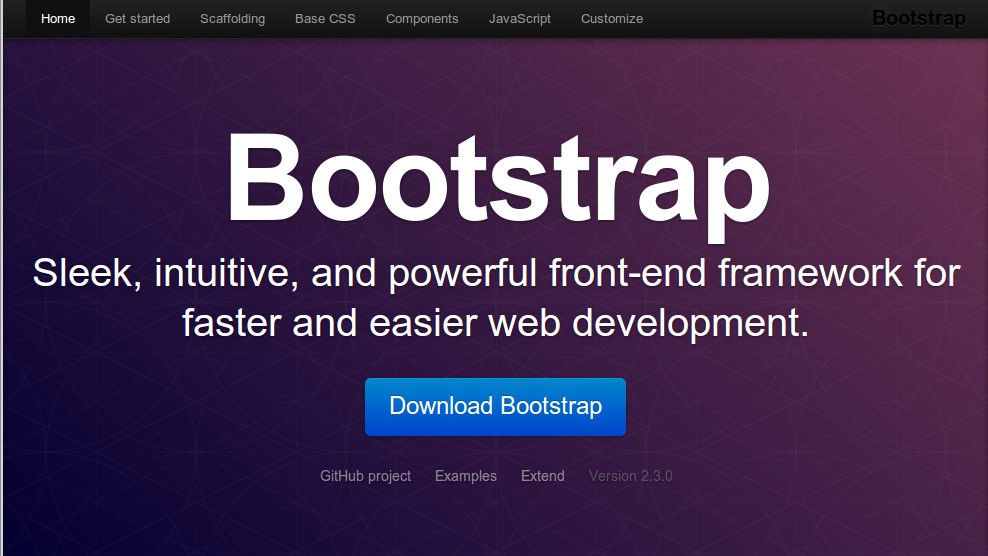

Un adentramiento en las ventajas y desventajas de utilizar Bootstrap.
Bootstrap es un popular conjunto de herramientas de código abierto diseñado para el desarrollo web responsive, ideal para adaptar sitios a diferentes dispositivos y pantallas.